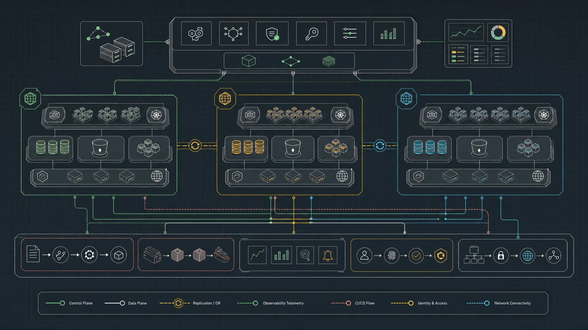

Ruta completa · inicial a experto
Ingeniería cloud que se puede explicar, ejecutar y operar
Fundamentos, AWS, Azure, Google Cloud, Kubernetes, IaC, SRE, seguridad, FinOps y arquitectura multi-cloud en un recorrido verificable.
Progreso global0%
0 de 288 clases
Clases288contenido completo
Partes24secuencia verificable
Duración1.288 hteoría + práctica
Laboratorios288prácticas verificables
Nubes3 + híbridaAWS · Azure · GCP
Dominio
Avance por etapa
Rutas profesionales
Documento completoElige un resultado, conserva los fundamentos
Mapa de capacidades
Seis planos de decisión, las 288 clases

Fundamentos y estrategiaPartes 00–01 · computación, redes, Linux y adopción
24 clases
Plataformas proveedorasPartes 02–04 · AWS · Azure · Google Cloud
36 clases
Portabilidad y plataformaPartes 05–08 · OCI · Kubernetes · IaC · GitOps
48 clases
Datos, operación y confiabilidadPartes 09–11, 21 · SLO · incidentes · seguridad · FinOps
48 clases
Arquitectura y continuidadPartes 12–15, 22 · distribuidos · DR · requisitos · C4
60 clases
Producción, edge, IA y capstonesPartes 16–20, 23 · AWS/Azure/GCP productivos · datos e IA
72 clases
288 clases · fuente de verdad
Currículo completo
Filtra por parte, nivel, laboratorio o estado. Cada clase abre su contenido íntegro, evaluación y práctica.
0%completado
288 clases1.288 horas
No hay clases para esta combinación.
Dependencias y resultados
Roadmap de aprendizaje
Las partes convergen en CloudShop: una plataforma que crece desde un servicio local hasta continuidad multi-cloud.
BaseProveedoresPlataformaOperaciónExperto
Proyecto continuo
EspecificaciónCloudShop, de localhost a multi-cloud
Cobertura y esfuerzo
Analítica del programa
Distribución real del catálogo y avance guardado únicamente en este navegador.
Progreso
Estado global
Carga
Horas por parte
Práctica
Motores de laboratorio
Comparación estructural
Cobertura simétrica de proveedores
| Plano | AWS | Azure | Google Cloud | Contrato portable |
|---|---|---|---|---|
| Organización | Organizations / SCP | Management Groups | Organization / Folders | Jerarquía y policy |
| Identidad | IAM / STS | Entra ID / RBAC | IAM / Workload Identity | OIDC y mínimo privilegio |
| Red | VPC regional | Virtual Network | VPC global | DNS, rutas y segmentación |
| Serverless | Lambda | Functions | Cloud Run / Functions | Eventos e idempotencia |
| Observabilidad | CloudWatch | Azure Monitor | Cloud Operations | OpenTelemetry y SLO |
| Gobierno | Config / Control Tower | Azure Policy | Org Policy / SCC | Policy as code |